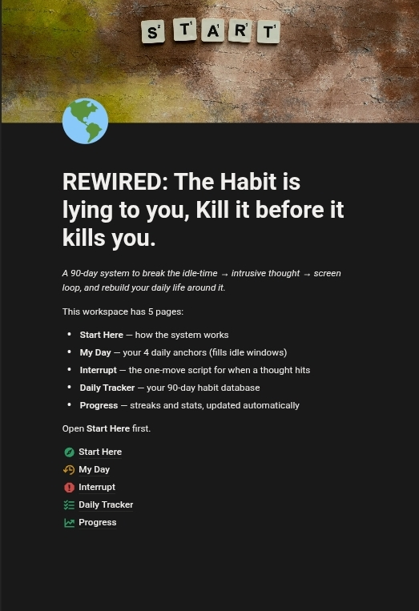
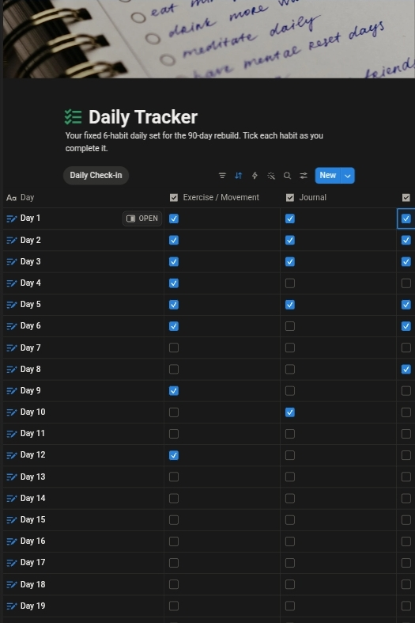

Start Here
Breaks down exactly how the habit lies to you and why you keep falling for it — so you finally understand the mechanism instead of just fighting it blind.
For remote workers, students, and freelancers who keep losing hours they can't get back
A structured Notion system that kills the habit at its source — the idle hours — instead of fighting it with willpower.

Instant access · No app to install · Works inside Notion
Your habit isn't a weakness. It's a liar. It whispers that one more scroll will fix something. It won't.
If any of this sounds like you — keep reading. This is for you.
Staying stuck doesn't feel like a decision. It feels like nothing happening — while life keeps moving, other people keep moving, and you stay in the same spot. Aware of it. Hating it. Still stuck in it. A little less sure each time that you can actually change.
But there's a better way.
A 90-day system that closes the gap between who you are right now and who you actually want to be.
I built Rewired because blocking apps and willpower never worked for me — the urge always found a way around them. So I stopped fighting the symptom and went after the idle hours where the loop actually starts. Ninety days later, I had my time back, and I built this system so you can get yours back too.
Start RewiringBreaks down exactly how the habit lies to you and why you keep falling for it — so you finally understand the mechanism instead of just fighting it blind.
4 daily anchors that starve the habit of the idle oxygen it needs to survive, built directly into your day.
One specific move to make the instant the pull shows up, so the urge gets killed on contact instead of building momentum.
A pre-built 90-day tracker with 6 fixed habits, so you never have to decide what to track or build the system yourself.

2 auto-updating charts so you can watch your consistency climb in real time instead of guessing whether it's working.

A short guide for the day you slip, so one bad night doesn't undo 60 good days.

I'm not a therapist. I lived on the wrong side of this exact problem for years — the promises, the 2am scroll, the mornings I hated myself before I'd even had coffee. This was never a willpower problem. It was a structure problem, and once I saw that, I built the system that got me out of it.
I'm building Rewired in public — using it myself every single day and improving it in real time based on how founding users actually use it. This isn't finished theory. It's a live system, and you'd be getting in on day one.
There's no highlight reel of results yet, and I'm not going to fake one. What's true right now: Rewired is built and used daily by me, in public, and improved in real time from how founding members actually use it. Every fix, every update, every sharper edge — it comes from this batch.
Founding members lock in benefits the next batch won't get. You're not joining a finished product. You're shaping it — and getting rewarded for being early.
A complete system worth ₦15,000 — yours for one low price.
Start Here + My Day + Interrupt + Daily Tracker + Progress dashboards + Relapse Protocol
Value: ₦9,000Every future version of Rewired, free, forever.
Value: ₦2,000Backup habits if one of the 6 doesn't fit your life.
Value: ₦4,000Secure checkout · Instant access · Lifetime updates for founding members
A single Notion template with 5 pages: Start Here, My Day, Interrupt, Daily Tracker, and Progress. You duplicate it into your own Notion account and it's yours — no app to download, no separate login.
No. Everything is pre-built — you just open it, read Start Here, and start checking boxes on Day 1. If you can tick a checkbox, you can run this system.
Blocking apps fight the symptom. Rewired targets the idle hours where the loop actually starts, then gives you a specific move for the moment the pull shows up — instead of relying on you to just resist it.
You use the Relapse Protocol — a short guide built for exactly this moment. One bad night doesn't undo 60 good days. The system expects slips and gives you a way back in, same day.
Neither. It's a structured Notion system — part short training, part daily tool. There's nothing to watch for hours. You read Start Here once, then run the daily pages for 90 days.
Blockers restrict access. Rewired restructures the hours where the urge builds in the first place, so there's less pull to fight later — with or without a blocker installed.
Yes, for founding members — free, for life. As the system improves from real usage, your copy improves with it, at no extra cost. Future cohorts move to a separate paid tier for updates.
No refunds. This is a digital system you get full access to immediately, and it only works if you run it. If you're not ready to commit to the 90 days, hold off until you are.
The next cohort doesn't get free lifetime updates or the Habit Swap List. This batch does.
Start RewiringYou can keep doing what you've been doing and see where you are in 90 days. Or you can Rewire it, starting now.
Start RewiringInstant Notion access · No refunds, no shortcuts, no way out but through